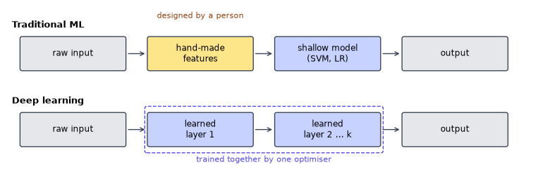
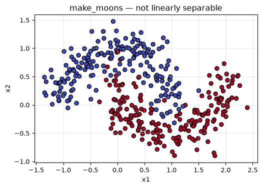
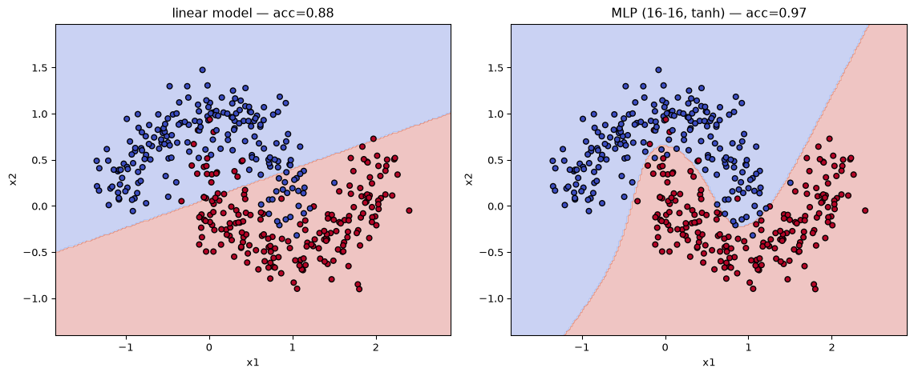

Foundations of Deep Learning
The lay of the land: what deep learning is, how it grew out of classical machine learning, and why it took off after 2012. Every later note assumes the pieces this one covers.
01 Machine learning — the setup
The idea that motivates all of DL: learning a function from examples.
The classical ML picture
Classical machine learning takes a task like "predict whether an email is spam" and turns it into:
- Collect examples — pairs of
(input, output). - Extract features — write code that turns each input into a hand-designed feature vector (bag-of-words, colour histograms, MFCC coefficients).
- Train a model — logistic regression, SVM, random forest — on those features.
- Deploy — the trained model plus your feature extractor.
The whole game rests on step 2. A good ML model with bad features cannot recover, and finding good features is where domain experts spent their careers.
Learning as function approximation
Every ML problem is really asking: what function maps inputs to outputs?
The parameters \theta are what we adjust during training. The training objective is to make f_\theta(x) \approx y on the examples we have, with the hope that the function generalises.
Why the framing matters
DL doesn't overturn this. It changes where the features come from — instead of writing them by hand, we let a deep composition of simple operations learn the features from raw data.
02 What "deep" learning changed

Python code for this figure
import matplotlib.pyplot as plt
from matplotlib.patches import FancyBboxPatch
def pipeline(ax, y, stages, colors, label):
x = 0.0
for i, (s, c) in enumerate(zip(stages, colors)):
ax.add_patch(FancyBboxPatch((x, y - 0.32), 2.0, 0.64, boxstyle="round,pad=0.04", fc=c, ec="#374151", lw=1))
ax.text(x + 1.0, y, s, ha="center", va="center", fontsize=9)
if i < len(stages) - 1:
ax.annotate("", (x + 2.45, y), (x + 2.05, y), arrowprops=dict(arrowstyle="->", color="#374151"))
x += 2.5
ax.text(-0.2, y + 0.55, label, fontsize=10, weight="bold", ha="left")
fig, ax = plt.subplots(figsize=(10, 3.2))
human, learned, io = "#fde68a", "#c7d2fe", "#e5e7eb"
pipeline(ax, 2.0, ["raw input", "hand-made\nfeatures", "shallow model\n(SVM, LR)", "output"], [io, human, learned, io], "Traditional ML")
pipeline(ax, 0.4, ["raw input", "learned\nlayer 1", "learned\nlayer 2 … k", "output"], [io, learned, learned, io], "Deep learning")
ax.add_patch(FancyBboxPatch((2.45, -0.05), 4.6, 0.9, boxstyle="round,pad=0.04", fc="none", ec="#4f46e5", ls="--"))
ax.text(4.75, -0.28, "trained together by one optimiser", ha="center", fontsize=8.5, color="#4f46e5")
ax.text(3.5, 2.75, "designed by a person", ha="center", fontsize=8.5, color="#92400e")
ax.set_xlim(-0.3, 10); ax.set_ylim(-0.5, 3.0); ax.axis("off")
plt.show()The one-line summary
Deep learning replaces the feature-engineering step with more layers of the same model.
Instead of:
raw pixels → (human) edge detector → (human) shape features → SVM → label
You get:
raw pixels → conv layer → conv layer → conv layer → linear layer → label
(all layers trained end-to-end by the same optimiser)Every layer in the middle is doing "feature extraction" — but the features are learned, not designed.
What made it work
Three things had to line up around 2012:
- Data. ImageNet (14M labelled images) and successors provided the scale.
- Compute. GPUs made training billions of parameter updates feasible.
- Ideas. ReLU, dropout, batch normalisation, better initialisation, and Adam-family optimisers — mostly small, cumulative improvements.
Before that, deep networks were too hard to train reliably; classical ML plus hand-crafted features held the lead.
What "deep" actually means
Depth = number of layers between input and output. A logistic regression is a "1-layer network". A modern vision or language model has anywhere from dozens to hundreds of layers.
Depth matters because each additional layer can compose the layer below into more abstract concepts:
- Layer 1: edges, gradients.
- Layer 2: corners, textures.
- Layer 3: object parts.
- Layer k: full objects, scenes, sentences.
This layered abstraction is what makes DL work on raw high-dimensional data (images, audio, text) where classical ML struggles.
03 The AI / ML / DL venn diagram
Three overlapping fields, often confused. Deep learning is the innermost circle.
Artificial Intelligence (biggest circle) — anything that makes computers appear intelligent. Rule-based expert systems, chess engines, planning algorithms, Prolog theorem provers. Predates ML.
Machine Learning (middle) — the subset of AI that learns from data. Linear regression, decision trees, k-means, SVMs.
Deep Learning (innermost) — the subset of ML that uses deep neural networks. CNNs, RNNs, transformers.
Genuine AI applications today are almost always ML applications; and the ML that gets deployed on hard perceptual tasks (vision, speech, language) is almost always DL. The three terms often get used interchangeably in press coverage — that's imprecise but usually forgivable.
04 Applications — where DL wins
A survey of what deep learning is actually used for today.
Computer vision
- Image classification — cat vs dog; medical images (tumour vs healthy).
- Object detection & segmentation — self-driving perception, satellite imagery.
- Image generation — Stable Diffusion, DALL-E, Midjourney.
- Face recognition — phone unlock, security.
Natural language
- Translation — Google Translate.
- Text generation & dialogue — ChatGPT, Claude, Gemini.
- Speech recognition & synthesis — Alexa, Siri, dictation apps.
- Sentiment analysis, classification — moderation, spam filtering.
Structured & scientific
- Protein structure prediction — AlphaFold.
- Drug discovery — molecular property prediction.
- Materials science, weather forecasting — GraphCast, Ithaca.
- Game playing — AlphaGo, MuZero.
Where DL is not the answer
Not everything needs deep learning. If you have:
- Small tabular data (< 10k rows) → classical ML (gradient boosting) usually wins.
- A hard-coded set of business rules → don't learn what you can specify.
- Very low-latency, embedded, or interpretability-critical settings → classical models may be preferred.
DL earns its complexity when you have (a) enough data, (b) enough compute, and (c) a task that resists hand-designed features.
05 Limitations of traditional ML
Feature engineering is expensive
For every new domain, someone has to design features. Medical imaging, astronomy, retail forecasting, speech, natural language — each has its own feature-engineering literature that took decades to build.
DL amortises this cost: the same architecture (CNN for images, transformer for sequences) works across many problems in a domain, with only the data changing.
Classical models don't scale with data
Roughly:
- Small data (~thousands) — classical ML (SVM, gradient boosting) usually wins.
- Medium data (~millions) — classical ML plateaus; DL catches up.
- Big data (~billions) — classical ML is nowhere; DL keeps improving.
The bigger the dataset, the more DL pulls ahead. Modern LLMs are the extreme end of this curve.
Raw high-dimensional data is a losing battle for classical ML
A 256×256 colour image = 196,608 pixel values. No SVM, no random forest, no logistic regression eats that directly. You had to reduce it to features first.
CNNs eat raw pixels. Transformers eat raw tokens. That's the shift.
06 The learning path — how the rest of the course fits
Every note is a step along one connected story. Read them in this order.
| Note | Topic | What you learn |
|---|---|---|
| 01 | Foundations (you are here) | The landscape, terminology, motivation |
| 02 | The neuron and the perceptron | Biological neuron → M-P neuron → perceptron → why XOR breaks it |
| 03 | MLPs and the forward pass | Stacking layers, the forward pass in matrix form, the universal approximation theorem |
| 04 | Activation functions | Sigmoid, tanh, the ReLU family, how to choose |
| 05 | Loss functions | MSE, cross-entropy, softmax |
| 06 | Gradient descent | GD, SGD, momentum, Adam, learning-rate schedules |
| 07 | Backpropagation | The chain rule and the backward pass, worked by hand |
| 08 | The XOR network end to end | Every number of a tiny network, forward and backward |
| 09 | Regularisation | Overfitting, dropout, batch norm, weight decay |
After note 09 you have every conceptual piece behind the code in the PyTorch notes (D3), the convolutional networks (D4) and the projects (D5), and you will know why each line is there.
07 Runnable demo — DL vs classical ML on non-linear data
The clearest way to feel the DL vs ML difference: give both a task that plain features can't solve.
import numpy as np
import matplotlib.pyplot as plt
from sklearn.datasets import make_moons
from sklearn.linear_model import LogisticRegression
from sklearn.neural_network import MLPClassifier
# Two interlocking half-moons — a classic non-linearly-separable dataset
X, y = make_moons(n_samples=400, noise=0.2, random_state=0)
plt.figure(figsize=(6, 4))
plt.scatter(X[:, 0], X[:, 1], c=y, cmap='coolwarm', edgecolors='k')
plt.title('make_moons — not linearly separable')
plt.xlabel('x1'); plt.ylabel('x2'); plt.grid(alpha=0.3)
plt.show()
Fit both a linear model and a shallow neural network
# Linear model — one-layer perceptron
lr = LogisticRegression().fit(X, y)
# Deep-ish network — 2 hidden layers of 16 units, tanh activation, trained by Adam.
# learning_rate_init=0.01: with the default 0.001 the loss falls so slowly that scikit-learn's
# "no improvement" rule stops training at ~88%, barely better than the straight line.
mlp = MLPClassifier(hidden_layer_sizes=(16, 16), activation='tanh', solver='adam',
learning_rate_init=0.01, max_iter=2000, random_state=0).fit(X, y)
print(f"Logistic Regression accuracy: {lr.score(X, y):.3f}")
print(f"MLP (2 hidden layers) accuracy: {mlp.score(X, y):.3f}")Logistic Regression accuracy: 0.875 MLP (2 hidden layers) accuracy: 0.968
Visualise the decision boundaries
def plot_boundary(model, X, y, ax, title):
x_min, x_max = X[:, 0].min() - 0.5, X[:, 0].max() + 0.5
y_min, y_max = X[:, 1].min() - 0.5, X[:, 1].max() + 0.5
xx, yy = np.meshgrid(np.linspace(x_min, x_max, 200),
np.linspace(y_min, y_max, 200))
Z = model.predict(np.c_[xx.ravel(), yy.ravel()]).reshape(xx.shape)
ax.contourf(xx, yy, Z, alpha=0.3, cmap='coolwarm')
ax.scatter(X[:, 0], X[:, 1], c=y, cmap='coolwarm', edgecolors='k', s=25)
ax.set_title(title); ax.set_xlabel('x1'); ax.set_ylabel('x2')
fig, axes = plt.subplots(1, 2, figsize=(12, 5))
plot_boundary(lr, X, y, axes[0], f'linear model — acc={lr.score(X, y):.2f}')
plot_boundary(mlp, X, y, axes[1], f'MLP (16-16, tanh) — acc={mlp.score(X, y):.2f}')
plt.tight_layout(); plt.show()
What just happened
The linear model can only draw a straight line — and no straight line separates two interlocking crescents, so it is stuck near 88%. The MLP reaches about 97%: with noise this large a few points sit inside the other moon, and no sensible boundary gets them. The MLP, with two small hidden layers and non-linear activations, learns a curved decision boundary that follows the data.
You just watched the "why we needed deep learning" argument in miniature. The next notes fill in the mechanics of how the MLP did it.
- Note 02 — the single-unit ancestor of the MLP.
- Note 03 — how the layers stack.
- Note 04 — why we chose
tanhabove. - Note 05 — what the MLP was minimising.
- Notes 06 and 07 — how Adam actually updated the weights.
- Note 09 — how to keep it from memorising the training set.
Every cell on this page runs on a live Python kernel on your computer, and cells share their variables like a notebook. Change noise=0.2 to 0.35, or hidden_layer_sizes=(16, 16) to (2,), and run the cells again to see the boundary change. + cell under any cell gives you a scratch cell of your own.